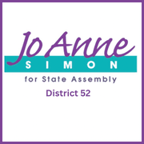

The district
 State Assembly
State Assembly State Senate
State Senate Congress
Congress Subway
Subway Citi Bike
Citi Bike NYC Ferry
NYC FerryTurn layers on and off. Tap an official's logo or a board's seal for its page. Zoning and land use lot by lot are on the land use map.
About
Council Member Crystal Hudson represents City Council District 35. It sits in Brooklyn.
The district overlaps community boards Brooklyn 2, Brooklyn 8 and Brooklyn 9.
It is policed by the 71st, 77th, 78th and 88th Precincts.
It overlaps Assembly districts 43, 44, 52 and 57 and Senate districts 20, 25 and 26.
First elected in 2021 and sworn in January 2022. Members of the City Council serve four year terms and are limited to two consecutive terms.
Next on the ballot in November 2029, when the seat will be open: Council Member Hudson is term limited and cannot run again. For the election in front of us, see where you vote in November 2026 or what is coming up on the calendar.
Council District 35 in numbers
The Census publishes no figures for council districts. These are the community districts Council District 35 covers.


U.S. Census Bureau, American Community Survey 2019-2023 5-year estimates.
Committees
Contact
Overlap
Community boards
Bars show how many of the district's election districts fall in each board.
Overlapping elected officials





| Brooklyn CB 2 | 44% of the council district | 44% of it |
| Brooklyn CB 8 | 29% of the council district | 50% of it |
| Brooklyn CB 9 | 22% of the council district | 39% of it |
| Brooklyn park/airport area | 5% of the council district | 14% of it |
| 88 Precinct | 40% of the council district | 75% of it |
| 77 Precinct | 25% of the council district | 47% of it |
| 71 Precinct | 22% of the council district | 39% of it |
| 78 Precinct | 10% of the council district | 12% of it |
| 84 Precinct | 2% of the council district | 6% of it |
| Sector 77A | 15% of the council district | 100% of it |
| Sector 88D | 15% of the council district | 100% of it |
| Sector 71A | 12% of the council district | 100% of it |
| Sector 71B | 11% of the council district | 82% of it |
| Sector 88B | 9% of the council district | 92% of it |
| Sector 88C | 8% of the council district | 39% of it |
| Sector 88A | 8% of the council district | 100% of it |
| Sector 78C | 6% of the council district | 58% of it |
| Sector 77B | 5% of the council district | 47% of it |
| Sector 78D | 5% of the council district | 12% of it |
| Sector 77C | 4% of the council district | 29% of it |
| Sector 84B | 2% of the council district | 14% of it |
| School District 13 | 50% of the council district | 38% of it |
| School District 17 | 45% of the council district | 28% of it |
| School District 14 | 3% of the council district | 1% of it |
| School District 15 | 2% of the council district | 1% of it |
| Senate District 20 | 46% of the council district | 21% of it |
| Senate District 25 | 46% of the council district | 22% of it |
| Senate District 26 | 8% of the council district | 2% of it |
| Assembly District 57 | 55% of the council district | 70% of it |
| Assembly District 43 | 23% of the council district | 30% of it |
| Assembly District 44 | 17% of the council district | 14% of it |
| Assembly District 52 | 6% of the council district | 5% of it |